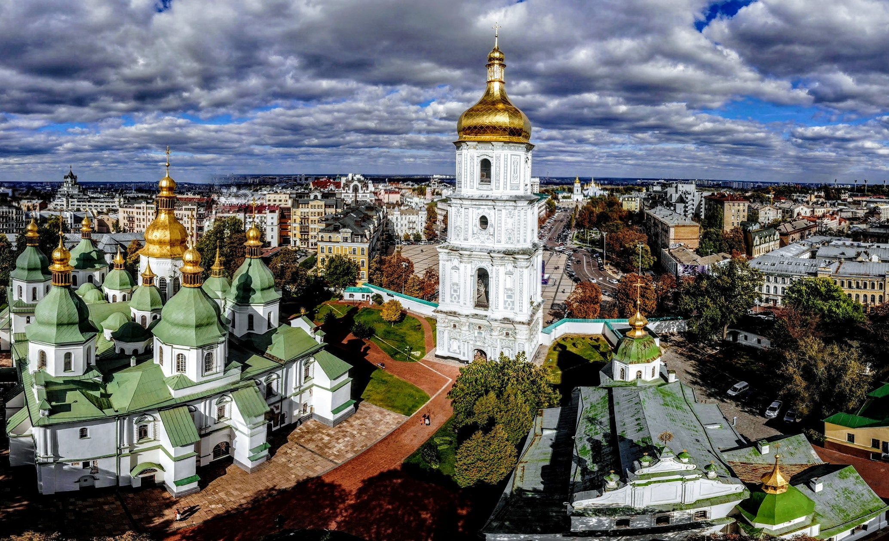
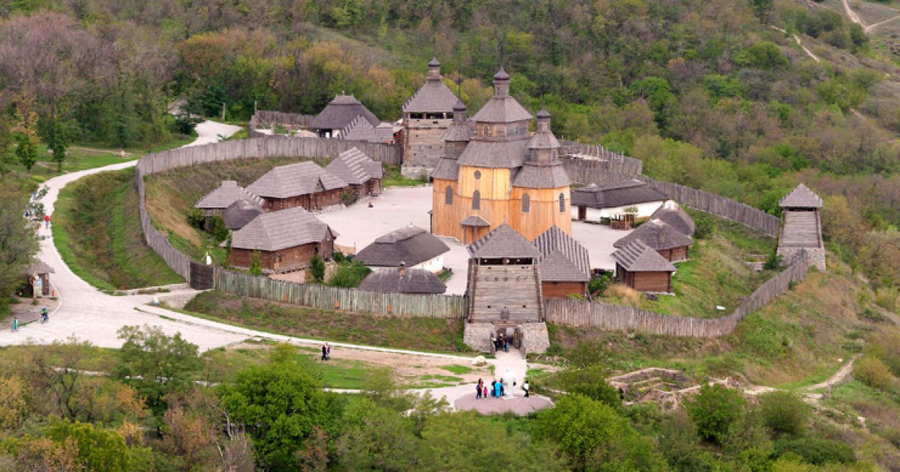

Заповідник Кам’янець
м. Кам’янець-Подільський

Над скелястими берегами тихоплинного Смотрича підносяться стіни й вежі древнього міста – одного з найбільш мальовничих у Східній Європі. Недаремно ж Кам’янець-Подільський (Кам’янець на Поділлі, Кам’янець) називають «квіткою на камені», «перлиною Поділля». У недавньому минулому він був політичним, економічним і культурним центром цього краю – історико-етнографічного регіону на південному заході України. У топографічному відношенні Старе місто в Кам’янці-Подільському не має собі рівних не лише на Поділлі, але й далеко за його межами. Місто знаходиться на скелястому півострові овальної форми (площею 120 га), оточеному глибоким каньйоном Смотрича. Із заходу Кам’янець-Подільський з’єднаний зі Старою фортецею Замковим мостом, що проходить по вузькому скелястому гребеню, а зі сходу – з Новим планом (сучасним центром міста) Новопланівським мостом, збудованим у ХІХ ст.
Києво-Печерська Лавра
м. Київ
Києво-Печерська лавра – православний монастир, заснований у 1051 р. монахами Антонієм і Феодосієм поблизу Києва. В ХІ ст. монастир став центром розповсюдження і затвердження християнства у Київській Русі. У ХІІ ст. монастир отримав статус «лаври» – головного великого монастиря.Назва лаври «Печерська» походить від слова «печери», бо саме у печерах на її території оселялись перші монахи. Частими відвідувачами печерного монастиря були князь Ізяслав, син Київського князя Ярослава Мудрого та київська знать, яка жертвувала кошти на будівництво наземного храму та келій.Монахи Києво-Печерської обителі і, насамперед, відлюдники, вирізнялися високою моральністю та подвижництвом. Це притягувало до Лаври освічених людей. Монастир став своєрідною академією православних ієрархів. Тільки до початку XIII ст. з числа його іноків у різні міста Київської Русі було призначено 50 єпископів. Києво-Печерська лавра зіграла важливу роль у розвитку давньоруської культури, вона була центром літописання.
Софіївка
м. Умань
Заснував парк у 1796 р. польський магнат Станіслав Потоцький на честь своєї дружини красуні-гречанки Софії та подарував його у день її янгола, в травні 1802 р. Ідея створення парку в романтичному стилі з використанням римської і грецької міфологій належала самій Софії. Дивовижні пейзажі, екзотичні рослини, античні скульптури, водойми, каскади, фонтани, кам’яні гроти – все це гармонійно поєднується і створює неповторну атмосферу казки. Цей шедевр вражає відвідувачів своєю красою вже понад 210 років. Втілювали задум архітектурного проекту народні майстри-умільці Уманщини – з 1796 по 1802 рр. копали ставки, підземну річку, споруджували водоспади й водограї, прокладали алеї, переносили велетенські гранітні брили, створювали із граніту та гіпсу художні прикраси для архітектурних споруд. У парку висаджували дерева місцевих порід та екзотичні рослини, завезені з різних країн світу. Прикрашали парк мармуровими статуями грецьких богів та богинь, філософів та поетів, виготовленими скульпторами Італії та Франції. У парку навіть зберігся дуб, віком біля 400 років, – німий свідок багатьох подій, що відбувалися у цих місцях. За народними переказами, саме під цим дубом збиралися на наради з козаками легендарні українські ватажки Максим Залізняк та Іван Гонта.
Софія Київська
м. Київ
Найвеличнішою спорудою Національного заповідника „Софія Київська” є Софійський собор – всесвітньо відома пам’ятка архітектури і монументального живопису ХІ ст. У 1990 р. собор разом ансамблем монастирських споруд на його подвір’ї занесено до Списку всесвітньої спадщини ЮНЕСКО. Заснування собору згадується в літописах як під 1017, так і під 1037 роками. Будівничим Святої Софії літописці називають великого Київського князя Ярослава Мудрого. Джерела свідчать, що в цій справі Ярослав завершив починання свого батька Володимира. Давньоруські написи-графіті на фресках храму, що містять дати 1022, 1033 та 1036 рр., підтверджують заснування Софії Володимиром – хрестителем Русі. Присвячений Премудрості Божій, собор, за задумом творців, мав утверджувати на Русі християнство. Упродовж сторіч Софія Київська була головною святинею Русі-України. Собор, як головний храм держави, відігравав роль духовного, політичного та культурного центру. Під склепіннями Святої Софії відбувалися урочисті „посадження” на великокняжий престол, церковні собори, прийоми послів, укладання політичних угод. При соборі велося літописання і була створена перша відома на Русі бібліотека.
Херсонес Таврійський
м. Севастополь
Херсонес Таврійський – таку назву носило місто, засноване давньогрецькими колоністами понад дві з половиною тисячі років тому на південному заході Кримського півострова. Слово „Херсонес” зазвичай перекладають з грецької як „півострів”. Місто дійсно було розташоване на невеличкому півострові поміж двох бухт. Таври – войовниче плем’я, що заселяло сусідні гористі місцевості, – спричинили народження епітету „Таврійський”, тобто „розташований на території таврів”. Територія сучасного заповідника охоплює межі стародавнього грецького міста – Херсонеса Таврійського, що виникло тут, на узбережжі Чорного моря, у V ст. до н.е. Місто було огороджене могутніми оборонними стінами і розплановане за схемою, поширеною тоді у грецькому та римському світах. До наших днів збереглося багато давніх споруд. Серед них – елліністичний театр, римська цитадель, середньовічні християнські храми, житлові квартали, вулиці, гончарні майстерні, обладнання для засолювання риби, колодязі тощо.
Хотинська фортеця
м. Хотин
Основу найбільшого острова на Дніпрі (довжина 12, ширина, в середньому, 2,5 км, загальна площа – 2360 га) складають граніти і гнейси, яким близько двох мільярдів років. Природна унікальність Хортиці в тому, що тут у мініатюрі представлені зразки всіх ландшафтних зон України. Дуже важливою та значущою є історична спадщина цього краю. Саме тут, за однією з версій, навесні 972 р. загинув Київський князь Святослав Ігоревич – одна з найяскравіших постатей давньої історії України. Вважається, що з Хортиці вирушали у козацькі походи проти поляків оспівані українським народом Северин Наливайко, Криштов Косинський, Іван Сулима. Бував тут і гетьман Петро Сагайдачний зі своїм військом. Саме на Хортиці Богдан Хмельницький отримав підтримку реєстрових козаків у часи Визвольної війни у 1648–1654 рр. Розкопки, проведені археологами заповідника, дають підстави стверджувати, що один із прототипів Запорозької Січі, її предтеча, існувала на Хортиці біля плавневої частини. Саме тут виявлено військове поселення Х–ХІV ст., а окремі знахідки (зброя, кераміка) свідчать про те, що коріння цього унікального об’єкта сягає глибше на кілька століть.
Хортиця
м. Запоріжжя
Хотинська фортеця – свідок численних війн та баталій. Протягом століть вона була центром розвитку ремесел і торгівлі, культури та економіки. Ця середньовічна красуня може багато розповісти тому, хто побажає вислухати її. Не випадково скелястий мис над Дністром наші предки називали «Хотінь». Назва міста походить від дієслова «хотіти», оскільки мис був бажаним та надійним місцем для давніх поселенців. Завдяки міцній твердині та вигідному розташуванню Хотин став центром розвитку ремесел і торгівлі, які, своєю чергою, сприяли розквіту його культури та економіки. Місто було важливим пунктом у європейсько-азійській торгівлі. Розташований на основних транспортних магістралях, Хотин завжди привертав увагу завойовників. З метою захисту від них була споруджена фортеця, яка пережила століття і бачила під своїми мурами полчища воїнів Османської імперії, повстанців Мухи, народних месників Дитинки, вояків Дмитра Вишневецького (Байди), Петра Дорошенка. Під час Визвольної війни українського народу проти польської шляхти у Хотин двічі вступали війська Богдана Хмельницького.